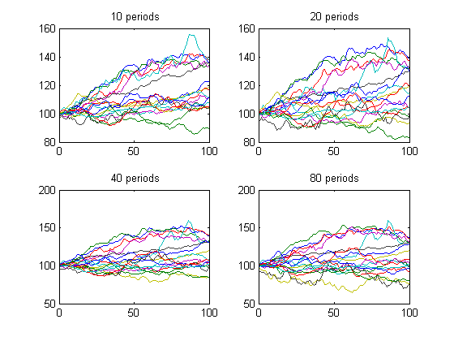
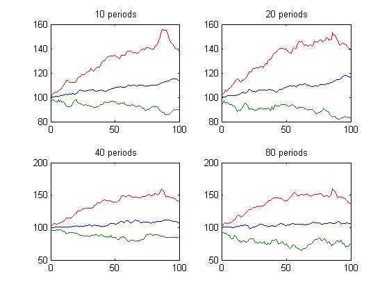
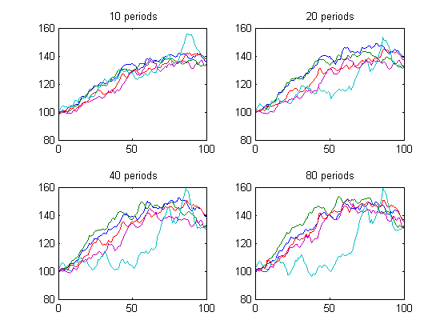

Commodities Trading with MATLAB - Testing a trend following strategy
One of the more common trading strategies within the commodities trading community is trend following. Trend following is an absolute momentum strategy in that it assumes that a particular commodity is trending if it's latest closing price is above the highest high (or below the lowest low) over the last few trading sessions. Note that there can be multiple ways to measure the likelihood of a trend; we capture this aspect in other scripts.
In this script, we demonstrate a simple trend following strategy: the strategy will go long a particular commodity at next period's opening price if the previous period's closing price is higher than the highest high in a specified lookback window, and will then hold the commodity for a specified holding period. Note that this is a long-only strategy, on weekly training data.
We test the strategy on every commodity in our specified container (weekly training data), under multiple lookback windows, and see how it has performed as the holding period increases. We then further test the strategy by slicing our data into specific commodity groups to determine if any particular group has a greater propensity towards trending behavior than others.
Contents
1. Setup
Load the cleaned, aligned data that was retrieved using the Demo_A script.
clc;clear;
load('StageA');
2. Set up commodity data container; only front month contracts
We want to test our strategy only on weekly front-month contract data. In this section, we process our data accordingly.
clc; container = TrainingSetWeekly; container = FilterByContractNumber(container,1);
3. Basic Trend Following: all products, multiple lookbacks/holding
This section sets up the trading strategy. The core parameters are the sizes of the lookback window and the maximum holding period, both measured in weeks. The main loop iterates through every commodity and, for every lookback window, computes the average performance of the long-only trend following strategy over a holding period ranging from 1 week to the maximum. Finally, it plots the performance on subplots separated by lookback window size.
% Parameters lookbackArray = [10 20 40 80]; holdingPeriod = 100; % Set up plotting clf; % Set up loops and aggregators ctr = 1; summary = [];worst = [];best = []; symbols = fields(container); clc; % Main loop for lookback = lookbackArray h = subplot(numel(lookbackArray)/2,2,ctr); allComms = []; fprintf('Computing strategy for lookback window: %2i\n',lookback); for i = 1:length(symbols) currSym = container.(symbols{i}); numMonths = length(currSym.Month); for j = 1:numMonths ohlc = currSym.Month{j}; % Set up lookback window and holding period window laggedHigh=max(createLags(ohlc.High,1:lookback),[],2); fwdClose=createLags(ohlc.Close,-(1:holdingPeriod)); % Remove NaNs nans=any([isnan(fwdClose) isnan(laggedHigh)],2); laggedHigh(nans)=0; fwdClose(nans)=0; % Compute signal; lag by 1 to trade from next period open signal=createLags(ohlc.Close > laggedHigh,1); signal(nans)=0; signal=any(signal,2); % Compute holding period returns; % average across multiple trades; % aggregate across products fwdRtnSeries=fwdClose .*repmat(signal,1,holdingPeriod) ... ./repmat(ohlc.Open.*signal,1,holdingPeriod); avgRtnSeries=nanmean(fwdRtnSeries); allComms=[allComms; avgRtnSeries]; end % Plot avg performance across multiple trades for current product plot(h,100*avgRtnSeries); title(gca,[sprintf('%3i',lookback) ' periods']); hold all; end ctr=ctr+1; range=1:holdingPeriod; worst=[worst; min(allComms(:,range))]; summary=[summary; median(allComms(:,range))]; best=[best; max(allComms(:,range))]; end
Computing strategy for lookback window: 10 Computing strategy for lookback window: 20 Computing strategy for lookback window: 40 Computing strategy for lookback window: 80
4. Plot summary charts of holding period returns with varying lookbacks
It might be difficult to make out individual details within the subplots in the above section. This optional section plots a summary of the best, worst and average commodity performance at each step in the holding period.
figure; for i=1:size(summary,1) lookback=lookbackArray(1,i); h=subplot(size(summary,1)/2,2,i); plot(h,100*summary(i,:));hold all; plot(h,100*worst(i,:)); plot(h,100*best(i,:)); title(gca,[sprintf('%3i',lookback) ' periods']); end
5. Backtest strategy on specific commodity groups
Now that we have seen our trading strategy performs across all commodities in aggregate over our training data, in this section we perform the same backtest over specific commodity groups such as 'Energy', 'Metal', 'Soft', or 'Grain'.
In this case, we can see that the strategy manages to capture the trending behavior of energy commodities fairly well.
container = TrainingSetWeekly;
container = FilterByContractNumber(container,1);
container = FilterByType(container,'Energy');
ComputeBacktestAndPlot(container);
